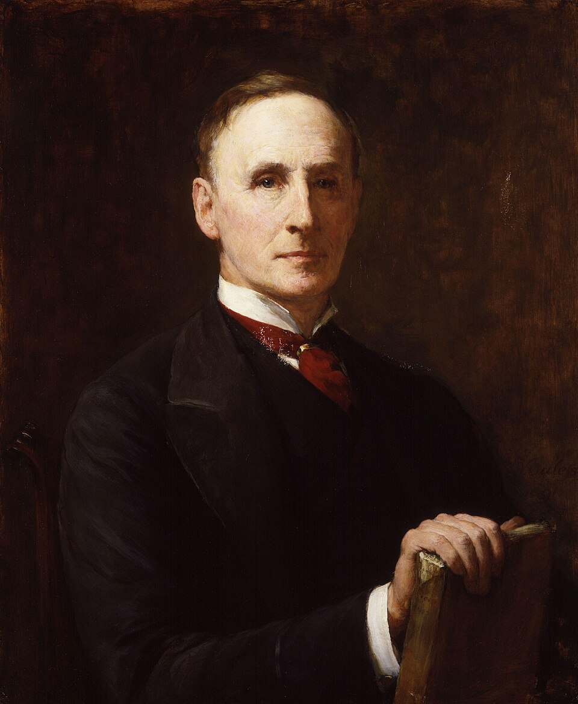
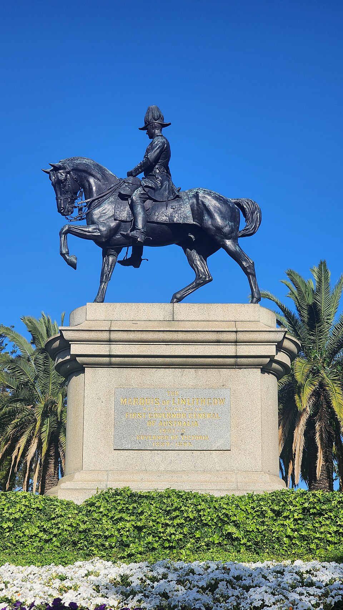

| Feature | 1909 (Morley-Minto) | 1919 (Montagu-Chelmsford) | 1935 |
|---|---|---|---|
| Named after | Lord Morley (SoS) + Lord Minto (Viceroy) | Edwin Montagu (SoS) + Lord Chelmsford (Viceroy) | Based on Simon Commission + Round Table Conferences |
| Key innovation | Separate electorates for Muslims (first time) | Diarchy in provinces (reserved + transferred) | Provincial autonomy; diarchy at centre (never implemented) |
| Legislature | Expanded councils (non-official majority in provincial) | Bicameral at centre (Council of State + Legislative Assembly) | Bicameral in provinces (Legislative Council + Legislative Assembly) |
| Franchise | Very limited (about 1%) | Limited (about 10%) | Limited (about 10%) |
| Separate electorates | Muslims only | Muslims, Sikhs, Christians, Anglo-Indians, Europeans | Extended further + Depressed Classes (reserved seats after Poona Pact) |
| Centre-province division | No clear division | Central + Provincial subjects (diarchy in provinces) | Three lists: Federal, Provincial, Concurrent |
| Federation | No | No | All-India Federation proposed (NEVER implemented — princes refused) |
| Institutions established | None | Bicameral legislature, Public Service Commission | Federal Court (1937), RBI (1935) |
| Indian reaction | Mixed — Muslims satisfied; INC disappointed | Disappointed — Rowlatt Act (1919) undermined it | Nehru: "a new charter of slavery"; INC participated in 1937 elections |


| Date | Event |
|---|---|
| 1861 | Indian Councils Act — first non-official members in legislative councils |
| 1906 | Muslim League founded (Dhaka) — demanded separate electorates |
| 1909 | Government of India Act (Morley-Minto Reforms) — separate electorates for Muslims |
| August 1917 | Montagu Declaration — "gradual development of self-governing institutions" |
| 1919 | Government of India Act (Montagu-Chelmsford Reforms) — diarchy in provinces; bicameral centre |
| 1927 | Simon Commission appointed to review the 1919 Act |
| 1930-32 | Three Round Table Conferences — discussed further reforms |
| 1935 | Government of India Act — provincial autonomy; Federal Court; RBI (April 1, 1935) |
| 1937 | Provincial elections — INC won 7 of 11 provinces; formed ministries |
| October 1939 | Congress ministries resigned (WWII declared without consultation) |
| 1947 | Indian Independence Act — based on Mountbatten Plan (June 3 Plan) |
Test your knowledge. Select the best answer for each question, then click "Check Answers" to see your score and explanations.